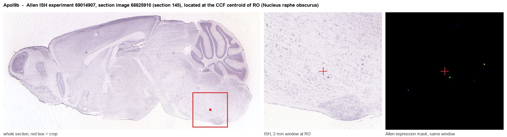
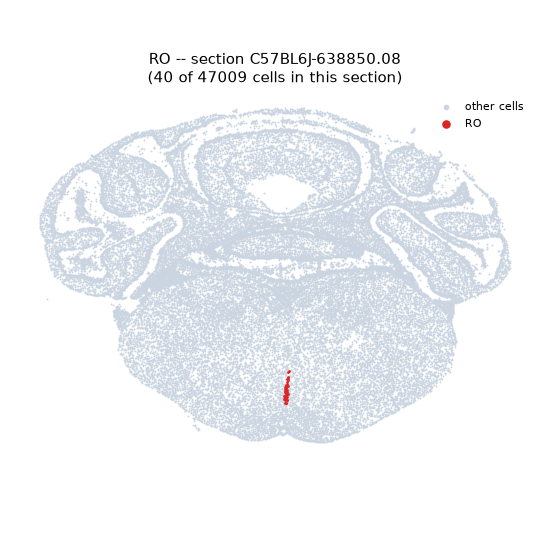
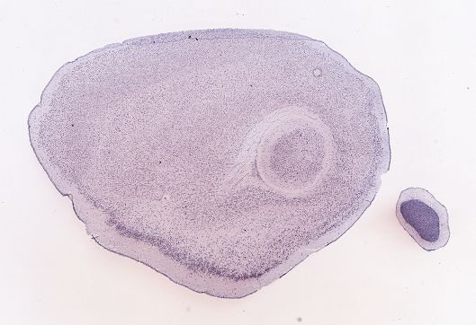
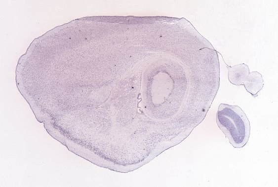
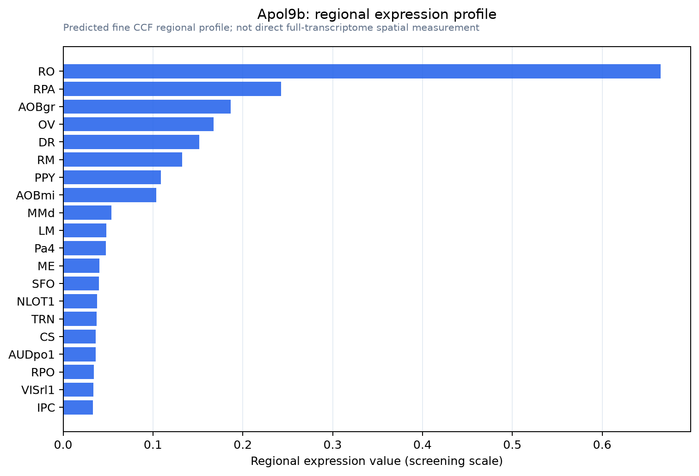

Apol9b
Apolipoprotein L 9b
Spatial tier: STRICT_EXCLUSIVE · Class: ION_CHANNEL · Top region: RO (Nucleus raphe obscurus) · Positive regions: 5/554
52.6Discovery Score
44.7Targetability Score
CEvidence grade C
What this means: Apol9b: predicted fine-region profile is strict-exclusive, with 5 positive regions out of 554 (limit 12); direct spatial validation is required.
Function in RO: evidence, prediction, innovation
- Gene function
- Apol9b encodes apolipoprotein L 9b, one of a rodent-specific pair (Apol9a/Apol9b) in the apolipoprotein L family. Despite the name it is cytoplasmic: microtubule- and membrane-associated, phosphatidylethanolamine-binding, interacting with LC3/GABARAP and prohibitins. It is an interferon-stimulated gene restricting Theiler-s murine encephalomyelitis virus replication.
- Region function
- The nucleus raphe obscurus is a caudal medullary serotonergic nucleus projecting to spinal and cranial motoneurons, modulating motor and respiratory output and CO2/pH chemoreception.
- Published in this region
- inferred No region-specific literature found. The closest finding is Kreit et al. 2014: Apol9 is induced in mouse brain and spinal cord after Theiler-s virus infection yet expressed only weakly in interferon-treated mouse neurons, which they linked to neurons' unusual susceptibility to that virus.
- Predicted function
- Prediction: enriched Apol9b in raphe obscurus likely marks an interferon-primed population: serotonergic neurons with high basal ISG tone, or microglia and vascular cells near the fourth ventricle floor. The role is likely cell-autonomous antiviral and autophagy-linked, so knockout should spare respiratory and motor phenotypes but increase viral load and neuronal loss after neurotropic picornavirus infection.
- Innovation
- ★★★★☆ 4/5 No Apol9 gene has been studied in a brainstem nucleus, and rodent-specificity plus absent reagents lower payoff and feasibility.
- Tools
- None for neuroscience: no Cre driver, no brain-validated antibody, no small-molecule modulator. Apol9a/Apol9b overexpression and knockdown constructs from the Theiler-s virus work exist; raphe obscurus is targetable with Sert-Cre, Pet1-Cre and Tph2-Cre.
- References
Direct evidence located at the region

Allen ISH experiment 69014907, section image 68825910 (section 145): the section that contains the CCF centroid of Nucleus raphe obscurus according to the Allen image-to-atlas alignment (reference_to_image), with a 2 mm window around that point. Left: whole section, red box = window. Middle: ISH signal. Right: Allen's expression-mask view of the same window. open this image in the Allen viewer
Look it up yourself: Allen Mouse Brain ISH for Apol9bAllen reference atlas: RO (structure 222)ABC Atlas MERFISH viewer(in the ABC Atlas choose dataset MERFISH-C57BL6J-638850-CCF, colour cells by gene "Apol9b" or by parcellation_substructure "RO")All genes confined to RO + 3-D brain
Direct spatial evidence
MERFISH REGION LOCATOR

DIRECT ALLEN ISH

DIRECT ALLEN ISH

Regional expression figure

Predicted WMB × fine-CCF profile; not direct full-transcriptome spatial measurement.
Spatial profile
Evidence and specificity
- Evidence status
- PREDICTED_FINE
- Direct sources
- None; predicted localization only
- Exclusive threshold
- 12 positive regions out of 554
- Spatial specificity
- 0.459
- Top-region fraction
- 0.256
- Filter status
- PASS
Interpretation limits
- Cell-type-to-region projection is imputed expression, not direct spatial measurement.
- Adult reference atlases do not establish stability across age, sex, strain, state, or disease.
- Transcript abundance does not guarantee protein abundance or genetic-tool performance.